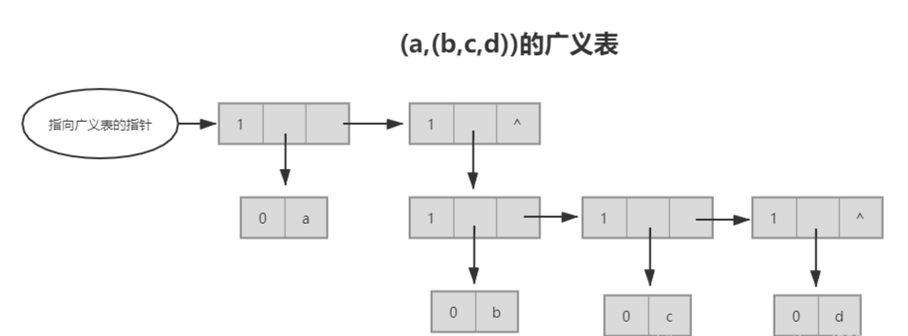

ryouの算法abondon史
导航：
基础
next_permutation：C++中的全排列函数；
to_string()：数字转字符串；
memset：赋值数组，memset(arr,0,sizeof(arr))；
iota：iota(v.begin(),v.end(),1)，批量递增赋值vector的元素
priority_queue<Type, Container, Functional>：Type 为数据类型，Container为保存数据的容器，Functional 为元素比较方式，less<Type> 代表从小到大，greater<Type> 代表从大到小；无参数则默认为大顶堆；
ranges::lower_bound(vtc,target)：二分查找，返回数组中第一个大于或等于被查数的值的迭代器；
decltype(auto)、typeid: decltype只做参数，不会求值；
multiset<int>：元素可重复
s.find（str）：查找子串，返回子串的起始位置，如果没找到，返回标识string::npos；
stoi() 和 atoi()：字符串转数字；
substr()：
数据结构
块状链表： 广义表：每个原子是一个有序数列（比如3*(x^2)*(y^4)*(z^5)的各个数字的存储）
广义表：每个原子是一个有序数列（比如3*(x^2)*(y^4)*(z^5)的各个数字的存储）

十字链表：Orthogonal linked list在Linux内核中应用广泛。具体说，一个二维十字链表是链表的元素同时链接左右水平邻结点与上下垂直邻结点。这一方法可以推广到更高维以存储稀疏矩阵、图等数据集合。
舞蹈链：可以理解为双向环形十字链表
01字典树：
算法
排序
插入排序
桶排序：用桶记录一个数的出现次数
标准库算法
erase：在set、list、unordered_map等容器中时间复杂度为O(1)，在vector、deque等容器中时间复杂度为O(n);
move：移动元素，减少拷贝，提高效率（针对在堆上分配内存）;
find：在set、list、unordered_map等容器中时间复杂度为O(logn)，在vector、deque等容器中时间复杂度为O(n);
sort：排序，时间复杂度O(nlogn);
lower_bound：在有序数组中查找元素，返回其位置，时间复杂度O(logn);
upper_bound：在有序数组中查找元素，返回其位置，时间复杂度O(logn);
binary_search：在有序数组中查找元素，返回bool值，时间复杂度O(logn);
next_permutation：生成下一个排列，时间复杂度O(n);
reverse：反转容器，时间复杂度O(n);
min_element：返回容器中的最小值，时间复杂度O(n);
max_element：返回容器中的最大值，时间复杂度O(n);
accumulate：累加求和，时间复杂度O(n);
count：返回容器中元素的个数，时间复杂度O(n);
contains()：C++20, map判断key是否在容器中
编程算法思维
位运算与集合：将一个集合被表示为二进制数，且位运算符合集合运算；
超图（hypergraph）：图的一种扩展，允许边有多个端点；
算法与个人理解
x>>1：位运算实现除以二；
x&(x-1)：位运算实现取最低位1；
Morris 中序遍历 O(n),O(1)：设置predecessor指针，将叶节点的右指针指向下一个应该访问的中节点;
KMP：substr()的实现，字符串匹配算法，时间复杂度O(n+m)，n为待匹配字符串长度，m为模式字符串长度；
bellman-ford：n-1次重复relaxation，时间复杂度O(mn);
dijkstra：适合点少边多的稠密图，时间复杂度O(ElogV)，这是一个链接
A*：相当于dijkstra算法加上启发函数，先猜一个估计的最短路径长度y(n)，当y(n)=0时，即为dijkstra这是一个链接